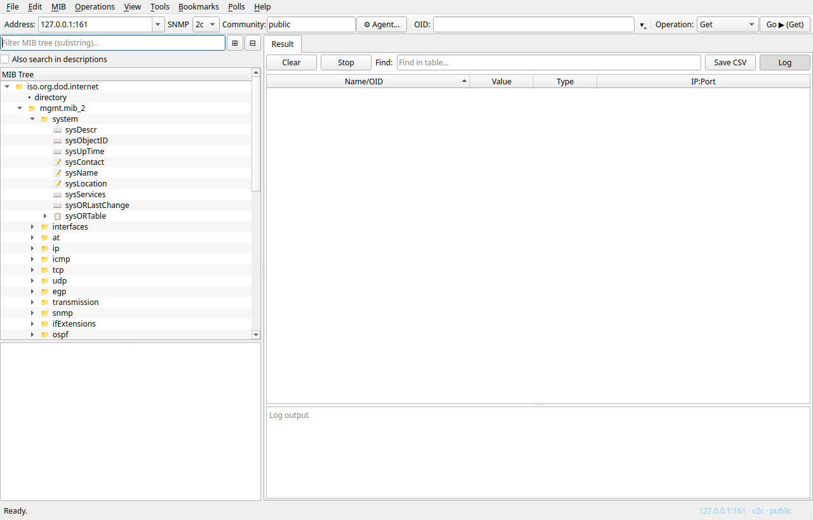

pymibbrowser — User Guide
A Qt-based SNMP MIB browser for Linux with traps, polls, watches, bandwidth visualisation and scriptable operations. This guide walks through every feature in the order you are likely to need them.
01 Overview
pymibbrowser is a desktop client that lets network
engineers query, graph, monitor and document SNMP-capable devices.
It ships bundled standard MIBs (RFC 1213, IF-MIB, HOST-RESOURCES-MIB,
SNMPv2 family, …) and reads any additional
.mib / .my / .txt source you
load. Vendor MIBs are hidden by default to keep the tree focused;
enable them via MIB → MIB Modules….
The UI is modelled after iReasoning's MIB Browser but reorganised around three questions engineers actually ask: what is the device showing me now?, how is it changing over time?, and did anything cross a threshold?
02 Quick start
- Install
snmpdon your test box (or pick any SNMP agent on your network). - Launch
./run.sh. - In the toolbar: enter the host in Address, set Community, pick the SNMP version.
- Type an OID in OID (for example
sysUpTime.0or.1.3.6.1.2.1.1.3.0) and press Ctrl+Enter — or pick any node in the left-hand tree and click Go ▶. - Results land in the Result tab; a Walk drops a row per varbind.
03 Main window
The window is split into the MIB tree on the left and a tabbed result pane on the right. The tree is collapsible; drag the splitter if you want more room for data.

Toolbar
- Address — editable combo box. Picks from
saved agents; typing a new
host:portpromotes it to the MRU list on first use. - SNMP — 1 / 2c / 3.
- Community — read-community. Write-community is set separately in Tools → Manage agents….
- ⚙ Agent… — opens the full agent editor (timeouts, retries, max-repetitions, SNMPv3 USM).
- OID — symbolic or dotted-numeric, with an
MRU
▾dropdown showing the last 20 you actually ran. - Operation and Go ▶ (Get) — the button always prints the current op so you can tell what pressing it will fire.
04 MIB tree & filter
Chains of organisational folders are collapsed into a single
dotted label — iso.org.dod.internet is one item, not
four. Tables, rows, scalars, columns and notifications always keep
their own entry so the tree reflects SMI structure.

Filter
Type a substring in the search bar; the tree prunes in 250 ms and matches auto-expand. Tick Also search in descriptions to match MIB DESCRIPTION clauses too — useful for finding "CPU" or "temperature" when the node names don't spell it out.
Press Ctrl+F to focus the filter from anywhere. If focus is inside the result pane, Ctrl+F instead jumps to the result-table filter; Ctrl+T always does that.
05 Running operations
Double-clicking a tree node stages it — sets OID, picks a sensible default op (GET on scalars, WALK on columns, GET SUBTREE on tables) and focuses the Go button. It does not send SNMP by itself — press Enter to fire. Right-click for an explicit GET / GET NEXT / WALK / SET / Table View / Graph / Bookmark / Add to Watches… context menu.
.1.3.6.1) pops a
confirm with a rough node-count estimate — avoids accidentally
dragging in 10 000 varbinds.
Default op per kind
| Selected node is | Default op | OID form |
|---|---|---|
| Scalar (sysName) | GET | appends .0 |
| Column (ifInOctets) | WALK | bare column OID |
| Table / row | GET SUBTREE | bare OID |
| Notification | GET NEXT | — |
| Anything else | GET NEXT | bare OID |
06 Result pane
Results arrive into the Result tab. Columns: Name/OID, Value, Type, IP:Port. Sortable on every column; the built-in vertical row counter is hidden so sorted order doesn't look random. Hover a cell to see the resolved MIB name, syntax and access in a tooltip.
The log pane underneath streams >>> request /
<<< response lines with hints
("that OID has no scalar instance, try WALK"). Hide the
log with the Log toggle button — the setting
persists.
Context menu on a result row
- Get / Get Next / Walk on the row's OID
- Graph — opens a real-time plot on the OID (auto-enabled rate mode for counters)
- Table View if the OID belongs to a conceptual table
- Copy OID / Copy value
07 Table View & Port View
Table View (View → Table View…) turns a WALK of a conceptual table into a proper grid: one row per instance, one column per MIB column, with an Index Value column showing the OID suffix. Rotate transposes it for narrow tables.
Port View (Tools → Port View…) visualises
ifTable as a live grid of tiles: one per interface
with up/down badge, bandwidth utilisation bar and real throughput.
It prefers ifHCInOctets/ifHCOutOctets
(64-bit) for anything faster than 100 Mbps — standard
ifInOctets overflows every few minutes on a 1G link
and would show zero. Click a tile to open a rate-mode Graph on that
port's ifInOctets.
08 Graphs
Pick a numeric OID and choose View → Graph…. The tab polls on an adjustable interval, keeps a 600-sample sliding window (configurable in Preferences), and plots with pyqtgraph. Counters should use Rate (delta) so the line reflects throughput instead of the monotonically-rising counter value.
Applying a new OID discards the current trace — if you had minutes of data collected the dialog will ask before throwing it away. Export CSV preserves the samples.
09 Bookmarks
Anything you run more than twice belongs in a bookmark. Ctrl+D on the current OID pops:

Bookmarks → Manage Bookmarks… gives you a table to edit, reorder, or Go (run) a bookmark without leaving the dialog. Shift+click on any bookmark in the menu loads it into the toolbar without firing — handy when you want to double-check before sending.

10 Polls
A Poll periodically GETs a fixed set of variables against one or more agents. Use it for uptime sweeps, status-page style dashboards, or anything you'd otherwise script by hand.

Running a poll opens a tab where rows are agents and columns are variables. Cells update live on the configured interval; errors appear inline in red. Export CSV on the toolbar dumps the current view for a post-mortem or ticket attachment.
11 Watches
Tools → Watches… — a live dashboard of single-OID predicates. Each row has an OID, an SNMP operation, and a "Normal state if result <op> <value>" condition. Green rows mean the predicate holds; red rows mean alarm; grey means fetching or error.
~/.local/share/pymibbrowser/watches_history.jsonl.
Open History… in the Watches tab for a filterable audit
trail with timestamps — answers "when did this first start
flapping?" without grep.
12 Device Snapshot
Tools → Device Snapshot… fires a fixed set of
queries against the current agent and lays the results out in
three panels: Basic Information (sys*
scalars), Interface Information (ifTable excerpt
with coloured ifOperStatus), System
Resources (hrSystemProcesses,
hrMemorySize; silently omitted if the agent doesn't
publish HOST-RESOURCES-MIB).
One Refresh repopulates everything — useful at the start of a troubleshooting session to capture the device's baseline.
13 Offline: Save walk & Compare
Tools → Save walk to file… walks a subtree and
writes a snmpwalk-compatible .walk file. You can
load it later into the bundled Agent Simulator as a mock device,
email it to a colleague, or diff two snapshots:

Tools → Compare devices… reads two sources (each can be a live agent or a saved walk file) and renders a coloured diff: equal rows grey, only-left blue, only-right orange, value-differs red.

14 Network tools
Shell-powered, no root required.

ping output.
tracepath (no root)
and falls back to traceroute -n.Network Discovery
Sweeps a CIDR with 64-wide threaded ICMP ping, then SNMP-GETs
sysName / sysDescr on the responders
using your current community. Tick the rows you want and press
Add selected to agents to populate Manage agents
in bulk.

15 Trap Receiver & Sender
Tools → Trap Receiver… listens on UDP (default 11162) and shows decoded traps in a sortable table: Time, Source, Severity, Trap OID, Community, Message.

Rules
Each rule matches by snmpTrapOID wildcard + source-IP
allow-list + payload substring, and can run one of:
Set severity, Set message,
Run command (template-substituted
{oid} {src} {sev} {msg} {name}),
Play sound, or Ignore. Commands run detached
via subprocess.Popen; sounds via
paplay / aplay / ffplay.
Click the Show raw PDU link in a trap's detail pane for a hex dump when the wire format looks suspicious.
Trap Sender

16 Agent Simulator
Tools → Agent Simulator… runs an in-process SNMP agent on
a port you pick. Without a walk file it returns bare defaults;
point it at a .walk produced by Save walk and
it replays that device byte-for-byte.

Tip: run two instances on different ports to rehearse a Compare devices workflow without needing real hardware.
17 Script Runner
Tools → Run Script… opens an editor for small SNMP scripts. Everything is line-based; one command per line.

Command reference
| Command | Meaning |
|---|---|
get <host[:port]> <oid> [oid…] |
SNMP GET |
getnext <host[:port]> <oid> … |
GET-NEXT |
set <host> <oid> <type> <value> … |
SET (types: i u t a o s c g x) |
sleep <seconds> | interruptible pause |
save <path> | redirect result lines to file |
if $ <op> <val> <action> [arg] |
conditional on last result; actions: sound,
email ADDR, sleep N |
Ctrl+Enter runs; the worker streams output into
the pane below. Closing the dialog aborts the script at the next
100 ms check — long sleep doesn't trap you.
18 Preferences
Everything persisted is here. Hovering a field or its label fills the hint strip at the bottom with an explanation — no need to memorise what "GETBULK max-repetitions" means.

Tabs
- General — UI language (auto / EN / RU) and single-root display for the MIB tree.
- SNMP — defaults for new agents, not the current one.
- MIB — fetch missing deps from
mibs.pysnmp.com, lenient parser toggle, shortcut to MIB Modules. - Traps — default port, accept-from CIDR list.
- Graph — max data points kept per trace.
- Logging — console level, log-file directory override.
MIB Modules

Manage agents

19 Keyboard shortcuts
| Key | Action |
|---|---|
| Ctrl+L | Load MIB… |
| Ctrl+, | Preferences… |
| Ctrl+F | Find — routes to the focused panel |
| Ctrl+T | Find in Result |
| Ctrl+S | Save results as CSV |
| Ctrl+Q | Exit |
| Ctrl+Return | Run current operation |
| F5 | Refresh the active tab (Result / Table / Graph / Watches — smart) |
| Escape | Stop current operation |
| Ctrl+D | Bookmark current OID… |
| Ctrl+1..9 | Switch to saved agent #N |
Help → Keyboard shortcuts opens a live version of this table.
20 Troubleshooting
"No response from agent"
- Is snmpd running?
systemctl status snmpd - Community and version match what the agent accepts?
- Port reachable? Tools → Ping confirms IP, but SNMP
may still be filtered — try
nc -u host 161.
Port View shows 0 bps for a known-busy VPN tun
The 32-bit ifInOctets overflows every few minutes on
a loaded tun interface. pymibbrowser already reads
ifHCInOctets (64-bit) when available; if the agent
doesn't publish ifXTable for tun interfaces it reports the
pre-overflow value. The tile tooltip tells you which source won.
"Failed to parse trap"
Open the trap's detail pane and click Show raw PDU for a hex dump. File an issue with the dump and the sending device's model/firmware.
Logs
Full DEBUG-level log is always written to
~/.local/share/pymibbrowser/logs/pymibbrowser.log
(rotated at 1 MB, 5 backups). Override the directory in
Preferences → Logging.
Found a bug or want to suggest a feature? Open an issue at github.com/Gehnmart/python_mibbrowser.